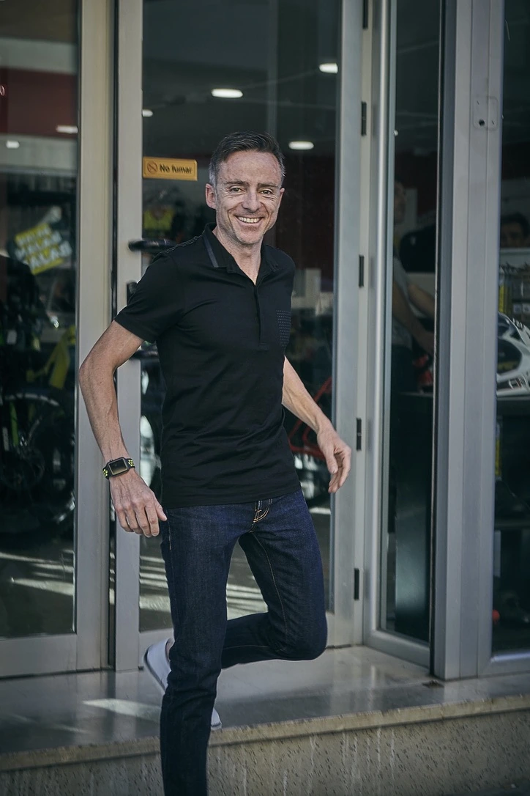

Juanra Doménech, AI Product Designer y ciclista
 01
01
AI ProductDesigner
Mi trabajo es ganar tiempo: concibo y diseño el producto, y dirijo su construcción con desarrolladores e IA.
Ver más →
02CiclistaCarretera
La bici es mi otra oficina. Kilómetros, puertos y constancia.
Ver más →La misma cabeza, dos carreteras
Lo que aprendo en la bici me sirve en la empresa. Y al revés.
Planificar
Ni una marcha ni un proyecto salen bien improvisando. El recorrido se estudia antes de salir.
Medir
En la bici, kilómetros y desnivel. En la empresa, horas ahorradas y euros. Lo que no se mide no mejora.
Constancia
El rendimiento no llega en un día de inspiración: llega con semanas de trabajo. La IA en una pyme, igual.
Tirar e ir a rueda
Saber cuándo marcar el ritmo y cuándo dejar que el grupo te lleve. Eso también es dirigir.
«No es que tengamos poco tiempo, sino que perdemos mucho.»
Casi dos mil años después, la frase sigue describiendo a la mayoría de las empresas: horas que se van en copiar datos, responder lo mismo y buscar papeles.
Mi trabajo es recuperarlo.
La bici me enseña qué hacer con él.
- 01
La IA recupera horas
Lo repetitivo lo hace la tecnología: informes, correos, ofertas, datos. Medido en horas, no en promesas.
- 02
Las horas se invierten
El tiempo recuperado no es para hacer más de lo mismo. Es para pensar, vender, cuidar al equipo… o salir a rodar.
- 03
La bici aclara la cabeza
Tres horas de carretera ordenan lo que no ordenan diez reuniones. Salgo con un lío, vuelvo con un plan.
- 04
El plan mejora la IA
Con la cabeza clara decido mejor qué automatizar después. Y el ciclo vuelve a empezar.
La IA me da tiempo. La bici me enseña a no perderlo.
Hablemos
De IA para tu empresa, de una charla para tu equipo o de una ruta en bici.